How UC Davis is Engineering Social Integration to Break International Student Silos
L
By Lecan Ouyang
Dec 20, 2025 • 8 min read
Part I: The Problem
The Invisible Wall of Comfort
At the University of California, Davis, a campus with over 40,000
undergraduates, diversity is a statistic, but inclusion is a daily challenge. For thousands of
international students arriving in California, the campus experience is often defined not by hostility,
but by a quiet, pervasive isolation known as "social silos."
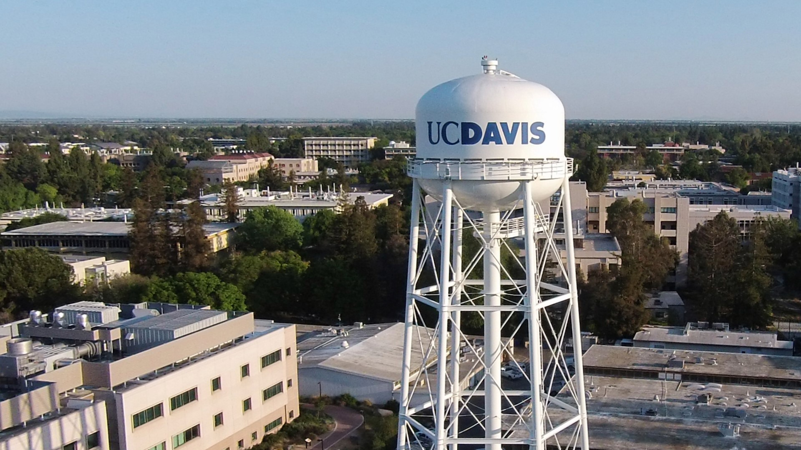
The sheer scale of the institution can be daunting for new students.
While the university offers standard support, the sheer scale of the institution can be daunting. As
Kim Notehelfer, the Global and Intercultural Program Coordinator, notes, the university is "siloed so much of the
time," making isolation one of the primary challenges students face.
The root of this isolation is often misunderstood. It is not necessarily an inability to adjust to
American culture, but a retreat into what feels safe. Pavitra Narayanan, a student Co-Coordinator for the Global
Ambassador Mentorship Program (GAMP), observed that students from specific regions often live and
socialize exclusively with one another. "It's just the idea that because you're familiar, you know, and
like you share a lot more in common with certain people, you tend to hang out with them more," Narayanan
explains.
"It's just the idea that because you're familiar, you know, and
like you share a lot more in common with certain people, you tend to hang out with them more," Narayanan
explains.
Gary Wang, a student leader involved in multiple integration programs, including Summer Start and PAL,
describes a more acute form of this withdrawal. He notes that many international students stay within
their "comfort zones" or "social silos" because they are "afraid to face new, unfamiliar things". He
observes that without intervention, students retreat to their rooms or language-specific circles to
avoid the vulnerability of cross-cultural interaction.
Traditional solutions, specifically the standard university orientation, have proven insufficient to
crack these silos. Notehelfer describes traditional orientation as a "fire hose of information" where students
are overwhelmed by events and layers of cultural nuance they cannot yet navigate. Wang critiques these
events as lacking depth, noting that orientation often results only in "hi-bye friends"relationships, which
never develop beyond a polite greeting because the interaction is fleeting.
Part II: The Response
From "Bookends" to "Waterfalls"
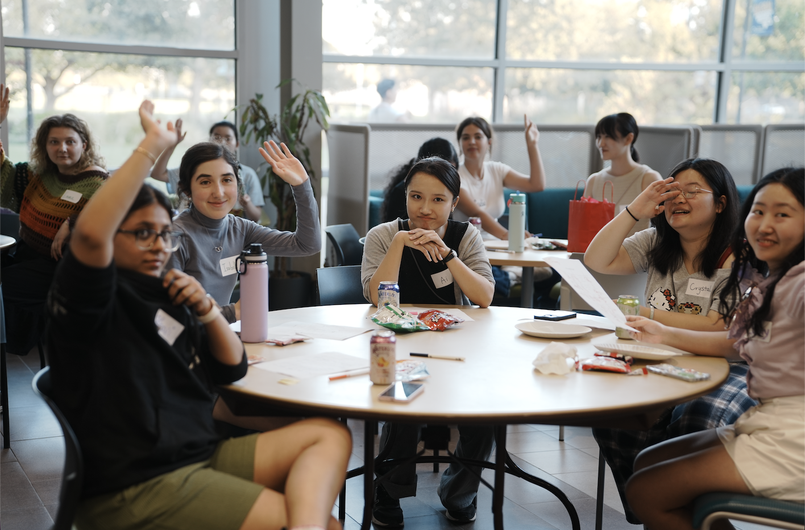
Moving beyond "Bookends" to continuous interaction.
To counter this, UC Davis has shifted its strategy from one-time events to
long-term, structured interventions. The solution lies in altering the time and the nature of social
interaction.
The first shift is temporal. Notehelfer argues that orientation models are moving away from being
"bookends", where support only exists at the start and end of college, toward a "waterfall" or "drip"
model.
"Can we move to a model where we're providing things throughout the first quarter where there's
more touch points?" Notehelfer asks.
Programs like Summer Start and GAMP operationalize this theory. Wang identifies the "Summer Start" model
as particularly effective because of its intensity. By intervening before the academic year begins, the
program creates a "high frequency" environment where students meet "almost every day" for weeks. This
density of interaction forces students past the initial awkwardness that plagues one-off events.
The second shift is in activity design. The goal is to move from passive listening to active "shared memories." Wang emphasizes that deep
relationships are built on shared experiences, citing activities from Summer Start like rafting, where
"we all fell into the water".
Wang explains, "You have a lot of memories built on top of that... even if
I'm not familiar with this person, we took the same boat".
Narayanan reinforces this, noting that "hands-on activities" like arts and crafts are significantly more
impactful than slide decks.
"Things like that, where people are sitting in groups and doing something or
working on a project... is more impactful," she says.
By engaging in a task, the pressure of direct
socialization is relieved, allowing connections to form organically.
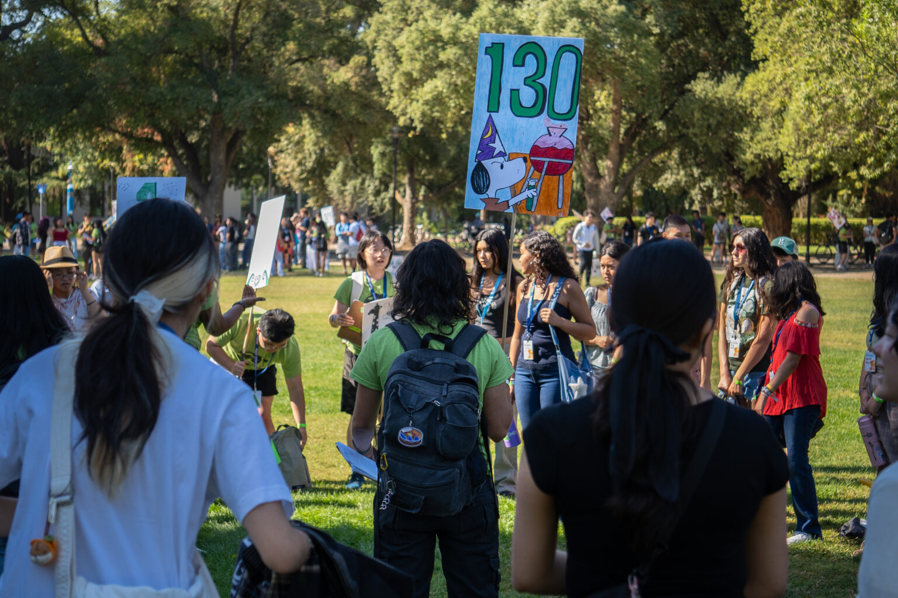
The "Fire Hose"
Passive Orientation in Lecture Halls
Shared Memories
"We all fell into the water"
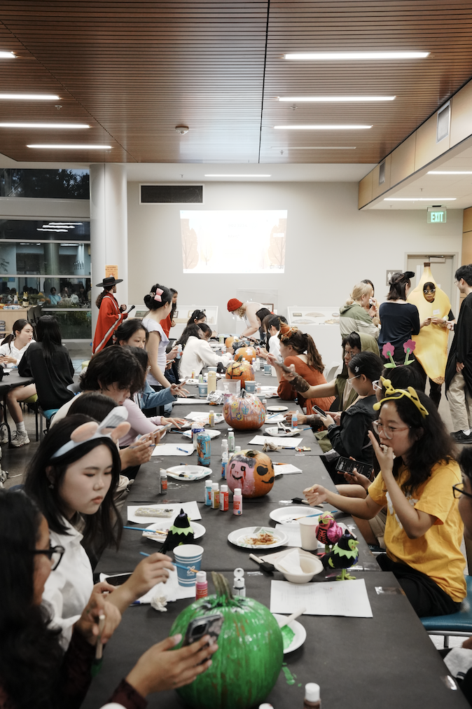
Real Connection
Peer-to-Peer Bridges
Visualizing The Problem
Passive Listening
Traditional orientation serves as "bookends" to the college experience, often overwhelming
students without creating lasting bonds.
Visualizing The Shift
Active Doing
By rafting or doing crafts together, vulnerability is shared. As Wang says, "Even if I'm not
familiar with this person, we took the same boat."
Visualizing The Result
Peer Leadership
Trained student mentors bridge the gap, using "pop culture references" and shared life
stages to establish rapport administrators cannot.
Part III: How It Works
The Mechanics of Peer-Led Integration
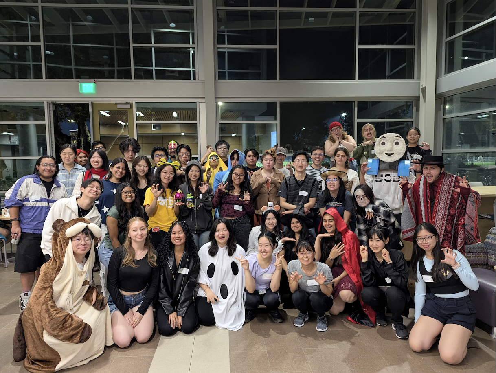
GAMP mentors connect through shared life stages.
The engine driving these programs is not administrative staff, but trained student peers. The logic is
that students can bridge cultural gaps that staff cannot.
"It was so much easier talking to my peers sometimes because they would get what I'm going through,"
Narayanan explains.
She notes the use of "pop culture references" and shared life stages in
establishing immediate rapport, something that is harder to achieve with higher-level administrators.
However, this peer leadership is not left to chance; it is highly professionalized. GAMP mentors are not
casual volunteers; they undergo a rigorous vetting process involving resumes and interviews. Once
selected, they enroll in a two-unit spring quarter course focused on "intercultural leadership development".
Notehelfer details that this training covers "cultural dimensions and cultural values, identity work, conflict
and work styles," and includes role-playing and critical reflection. Narayanan adds that the most
"astronomically useful" skill taught is time management and learning to navigate communication gaps without taking silence personally,
which also called the "art of patience."
Finally, the programs use specific matching mechanisms to engineer connections. While GAMP allows
mentees to prioritize preferences like major, hobbies, or gender, Wang points out that the PAL program
(Partners in Learning) often achieves higher success rates by matching based on specific, shared
interests, such as a student wanting to learn Spanish being paired with a Mexican student wanting to
learn about Taiwan. He notes that the PAL program also benefits from a "structured enforcement"
mechanism: Students participating in the program may choose whether or not to receive academic credit. If they choose to receive credit, they are required to enroll in a 1-unit companion course. This course requires students to meet weekly with their PALs and to regularly upload and report documentation of their weekly meetings as required.
"If you don't meet, your points will be deducted," Wang notes.
Part IV: Evidence of Effectiveness
From Retention to Real Life
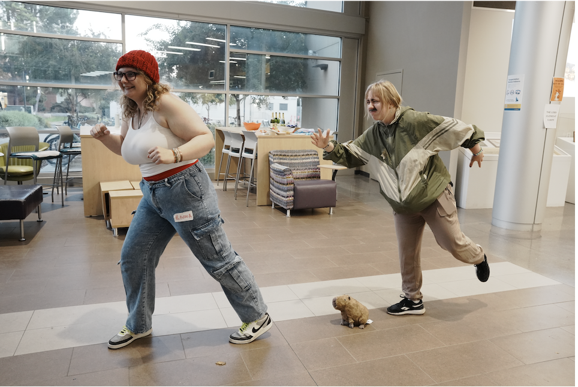
Friendships extending beyond the program.
The success of these structured interventions is measured not just by participation numbers, but by the
tangible transformation of students from passive participants into active community builders.
Quantitatively, the "return rate" of students effectively validates the sense of belonging fostered by
these programs.
Wang highlights a dramatic shift in the Summer Start program, noting that this year,
"about 50-60% of people are actually interested in coming back to be SLAs [Student Learning Assistants]
next year".
He contrasts this with the previous year, where out of over 80 participants, only about 10
expressed interest.
Notehelfer corroborates this metric for GAMP, stating that a key indicator of success is "how many mentees stay
in the program and then how many... apply to become a GAMP mentor".
She views this cycle as proof that the program is "creating an interest in students that they want to give back to the community
themselves".
Qualitatively, success is defined by interactions that occur outside the structured boundaries of the
programs, what Narayanan calls "conscious choices". The most
compelling evidence of genuine connection comes when relationships outlast the program's mandate.
Narayanan shares a pivotal moment when she and her mentees, who were exchange students preparing to leave,
decided to travel together.
"We all planned a trip to New York... technically after the program had
ended," she recounts. "I think that was really like the moment where I was like, yes, this program is so
helpful because I'm still keeping these connections alive".
Wang observes a similar ripple effect, noting that students who participated in Summer Start became
"very active" and adept at using campus resources. He frequently encounters them at other campus
events, creating a persistent and supportive social network where "you will find that these people
actually have a lot in common with us".
Photo Gallery
A sliding gallery highlighting program moments.
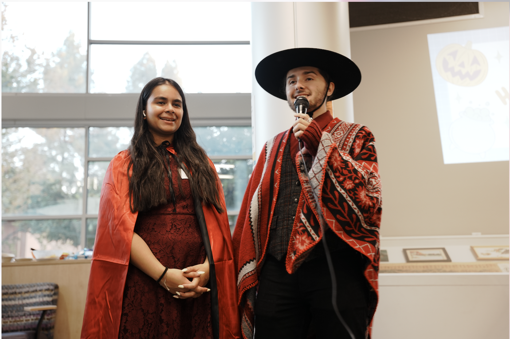
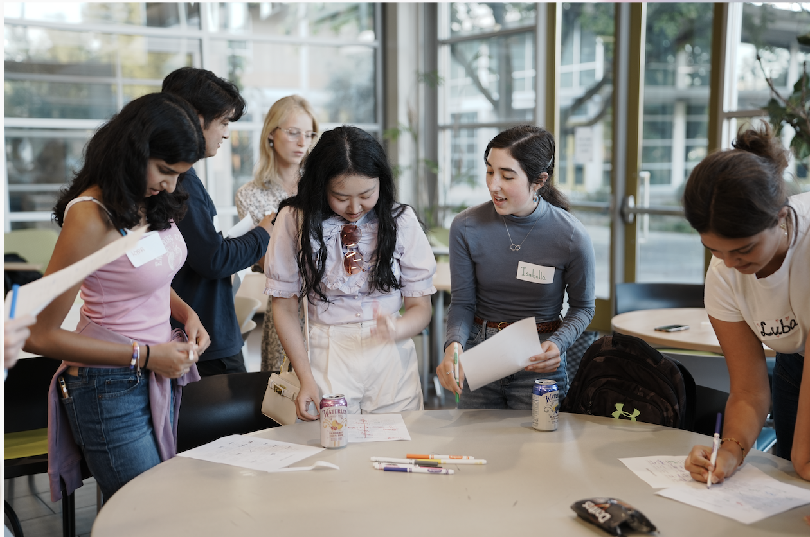
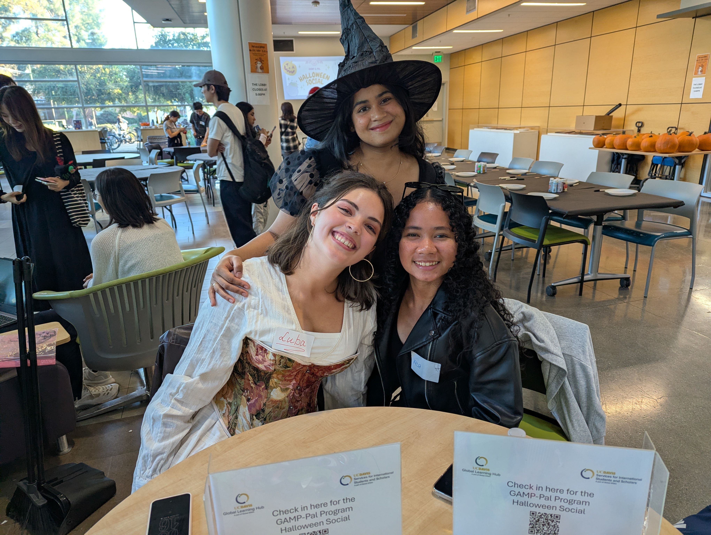
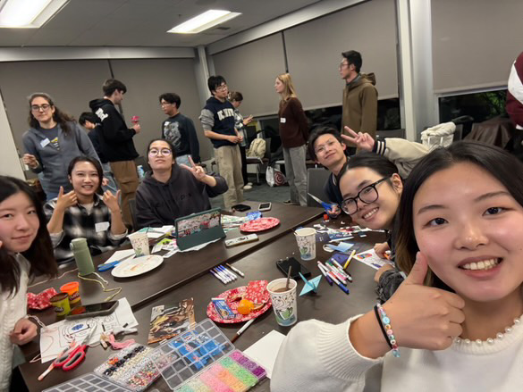
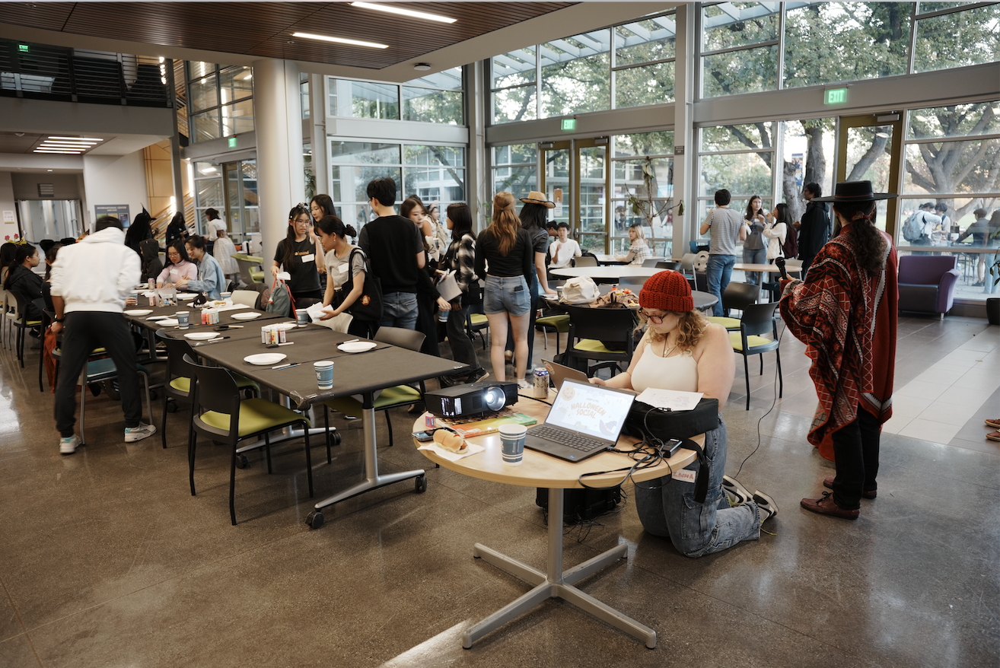
Part V: Limitations
The Tension Between Voluntary and Mandatory
Systemic hurdles like budget constraints persist.
Despite these successes, the programs face significant systemic hurdles, primarily centered on resource
constraints and the challenge of enforcing social engagement.
A critical limitation is the reliance on voluntary participation versus "structured enforcement." In the PAL program, students who are enrolled in the course are monitored throughout the entire quarter with respect to their meeting participation. In contrast, for students who do not enroll in the course, the PAL program lacks sufficient mechanisms to verify its effectiveness; whether participation is genuinely effective depends almost entirely on students’ voluntary commitment. Wang
argues that for students enrolled in the PAL course,the PAL program is often more effective than GAMP because of its mandatory nature.
"PAL is a class... if you don't meet, your points will be deducted," he explains. In contrast, GAMP relies on
intrinsic motivation. Wang notes that without external pressure, "ghosting" is common：
"If the mentee I met feels we don't get along very well... then the meaning of investing time is gone".
Another issue worth noting is that although GAMP was designed as a highly structured program, in practice it may be overly accommodating in its implementation.
“Whether it is the program director Kim, the Co-Cos, or the mentors who were selected, everyone is genuinely kind and always does their utmost to understand and accommodate others,” Wang noted.
However, this high degree of understanding and tolerance has also, in practice, created new challenges. Wang invoked a Chinese proverb—“the kind are often taken advantage of”—and elaborated: “In some ways, GAMP resembles an overly gentle ‘good-natured person’ who rarely sets firm boundaries. It tries to accommodate every potential issue, but this accommodation often comes with continuous compromise. Like someone who almost never gets angry, only a small number of people truly cherish such kindness. For many others, a person or program like this is often the first to be deprioritized—whether under academic pressure or when faced with entertainment and social choices—because the cost of ‘sacrificing GAMP’ is far lower than sacrificing other commitments.”
“Every participant in the program has invested a great deal of time and emotional energy,” Wang concluded regretfully. “As someone who genuinely cares about GAMP, I sincerely hope that the kindness and effort contributed by its members can lead to a more responsive, and ultimately a more worthwhile outcome.”
The system of financial incentives provided to student leaders also plays a role in shaping their level of engagement.
Wang noted that, on the one hand, GAMP appears relatively “generous” in its compensation structure.
Unlike campus jobs that require clocking in or are evaluated based on clearly defined performance metrics,
there seems to be little that directly affects the final payment. He compared this to “a course where students can earn an A without investing much time,” arguing that when the material reward remains the same regardless of the level of effort, students are less likely to take the commitment seriously.
On the other hand, for students who place a strong emphasis on financial compensation, Wang candidly described GAMP’s payment as resembling “cheap labor.” He pointed out that the program expects each mentor to maintain approximately 40 hours of contact with their mentees over the course of a quarter (even though this time commitment is not directly tied to the final payment). By his calculation, a $250 per quarter amounts to roughly $6 per hour,
whereas other campus positions typically offer wages of around $18 per hour.
Under these circumstances, Wang argued that unless a mentor is genuinely driven by strong intrinsic motivation, they are unlikely to remain committed when faced with uncooperative mentees.
Operational constraints also limit the scope of "shared memory" creation. Narayanan acknowledges that GAMP
faces budget limitations that Summer Start does not. While Summer Start students could go rafting and
visiting Tahoe because they paid tuition fees, GAMP struggles with "budgeting that goes into... food and
the games". Furthermore, Narayanan highlights the logistical stress of "finding time to plan and actually
execute these events" when everyone is "super busy".
Finally, there is the challenge of the "hidden" isolated students. Notehelfer admits that focus groups revealed
a segment of students who claim, "I'm actually fine," yet remain isolated. She notes that "the program
they might need gets lost in the over saturation of information".
Part VI: Comparison
Comparison: Traditional vs Proposed Programs
A concise comparison of trade-offs between typical ad-hoc approaches ("Traditional") and the programs described in this article.
Dimension
Traditional
Summer Start
GAMP
PAL (with class)
Target
Scattered individuals / passive outreach
All incoming students or cohorts
Academic mentors and mentees
Course-based small peer groups
Traditional efforts often miss students who aren’t actively seeking help. Programmatic approaches reach cohorts more reliably and create shared experiences that scale better.
Format
Ad hoc events, occasional advising
Residential, intensive engagement
Peer mentorship, semester-long
Mandatory component within a course
One-off activities lack continuity; Summer Start’s residential model fosters continuous interaction that builds stronger bonds over time.
Cost
Low (but limited effect)
High (tuition or dedicated funds)
Moderate (program budget limited)
Low (institution-supported)
Higher-cost programs can provide more resources and sustained interventions; cheaper approaches are easier to scale but often less effective.
Intensity
Low (sporadic engagement)
High (continuous activities)
Medium (regular contact)
Variable (depends on course schedule)
Intensity correlates with bonding: sustained, frequent interaction produces stronger social ties but requires more coordination and resources.
Strengths
Low cost, flexible
Strong cohort bonding, sustained outcomes
Structured peer support and guidance
High compliance via graded structure
Programs emphasize different strengths: Summer Start (cohort cohesion), GAMP (peer support), PAL (high participation via curriculum integration).
Limitations
Inconsistent impact; overshadowed by information overload
Expensive and selective
Budget and sustainability constraints
May be perceived as coercive by students
All approaches have trade-offs—cost, scale, and student perception vary; choosing an approach depends on institutional goals and resources.
Part VII: Conclusion
A Systemic Blueprint for Belonging
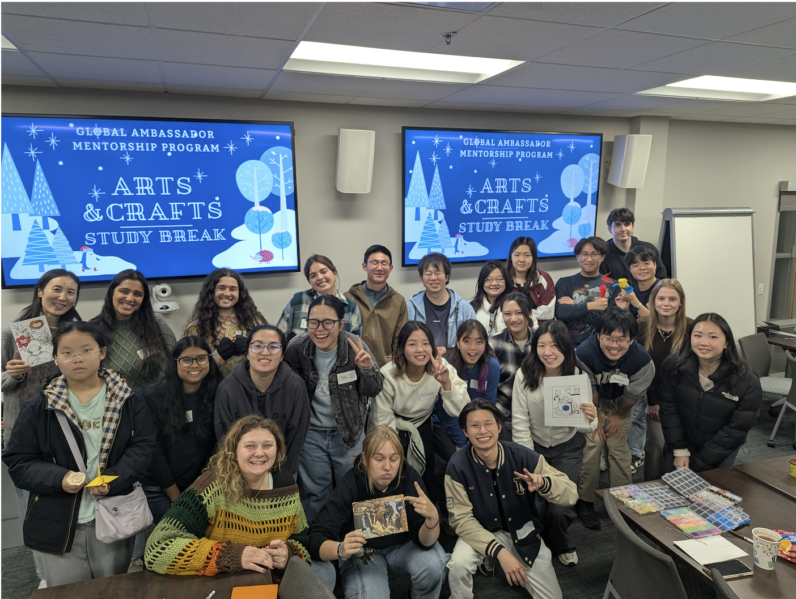
Creating structures that make connection inevitable.
The UC Davis experiment suggests that breaking social silos requires more than good intentions; it
requires a systemic engineering of social interaction.
For other universities looking to replicate this model, the advice from student leaders and staff is
clear. Notehelfer warns against a "knee-jerk reaction" to fix problems without understanding them, advising
institutions to "actually have to hear from the student" through focus groups rather than assuming a
"one size fits all" solution.
Ultimately, the solution to social isolation lies in creating structures that make connection
inevitable. By front-loading interaction through early intervention, enforcing engagement through
academic structures, and empowering peers to bridge the cultural gap, institutions can turn the daunting
"fire hose" of university life into a sustainable network of support.